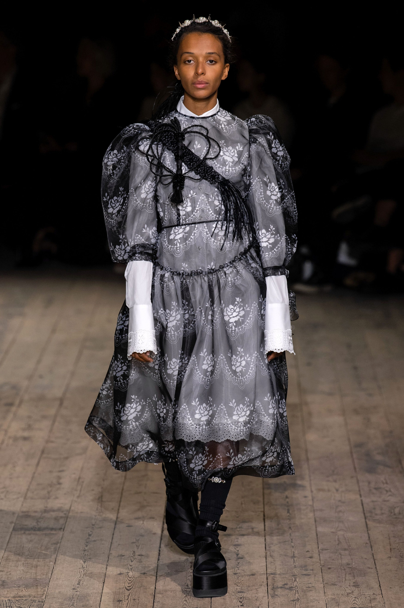
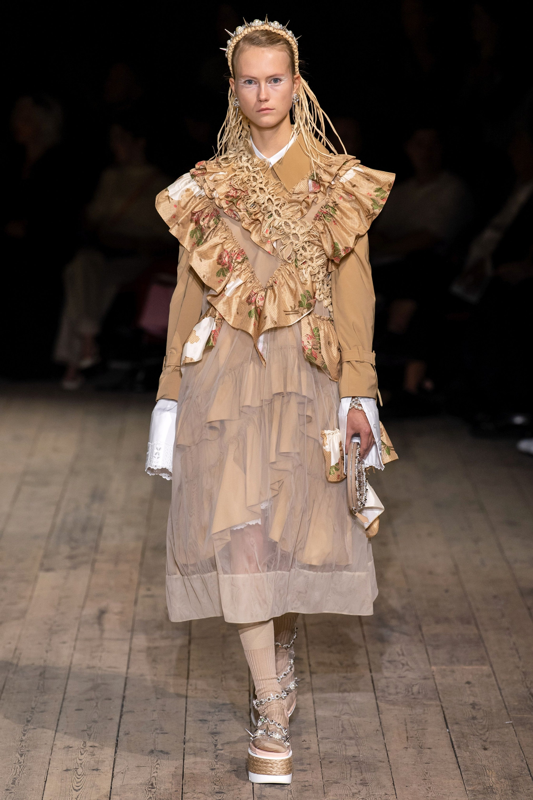

“I was thinking about the Irish wren-boys, who go hunt and kill a wren on St. Stephen’s Day
in Ireland—punkish boys who go knocking on doors, kind of like trick-or-treaters,” said Simone Rocha.
“So I wanted to bring that masculinity to the table but also turn and look into the houses
of the people whose doors they knock on—at the Delft china, the tablecloths, the wallpaper.”
Come showtime one never has to hunt too far to feel the shadow of something dark among the prettiness
at Simone Rocha. On the surface this was truly one of her prettiest collections,
what with its trapezoid volumes, sheer leg-o’-mutton sleeves, shirting smocks,
and eyelet-edged cuffs. Lovely palette too: after the china prints came sugar pink,
dark red, and faded chintzy antique prints.
Shown in the round—the stage of a flaking theater at Alexandra Palace—you caught the profiles of bubble dresses,
new silhouettes ballooning outward to be gathered in at knee level.
The new ballooning silhouettes—kind indeed to womanly bodies—were nevertheless gleaned from a sinister thought: “the outline of the bird,” said Rocha. Once she said it, you saw: the profile of a bird's crop and tail, blown up, in motion.
 